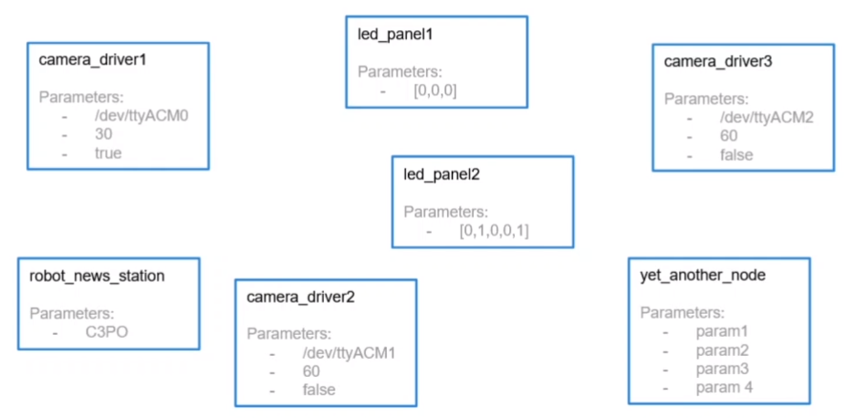
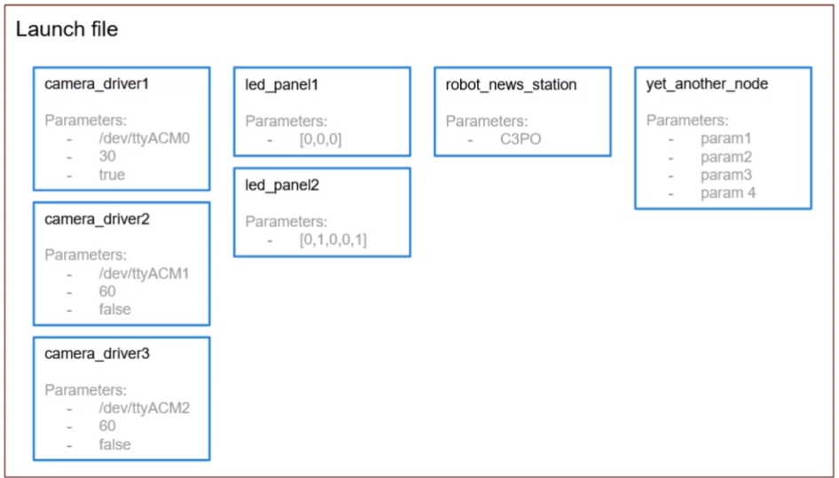

Launch Files — Start Everything with One Command
--params-file in each. Today a launch file starts the whole application, with every name, remap and parameter file, in one command. It is exactly how you'll start the LIMO.🎯 By the end of today you can…
- Explain why real robots start with
ros2 launch, not tenros2 runterminals. - Create a bringup package with a Python launch file.
- In a launch file: start nodes, rename them, remap topics, set parameters and load the YAML files from Lecture 5.
- Start 5 copies of the same node with one command.
led_system.yamlmy_robot_bringup/launchname · remappings · parametersNode(package, executable, name, remappings, parameters)ros2 launch my_robot_bringup app.launch.py🧑🏫 Instructor lesson plan (click to open)
| Time | Activity | Type |
|---|---|---|
| 0:00–0:10 | Warm-up + battery/LED demo from a student | Check |
| 0:10–0:25 | Recap of Lecture 5 parameters; launch files (the start button) | Teach |
| 0:25–1:05 | Launch-file builder + Lab 1 — bringup package, number_app.launch.py | Do |
| 1:05–1:15 | Break | |
| 1:15–2:00 | Lab 2 — rename/remap/params; Activity 6.2 — launch the LED system with its YAML file | Do |
| 2:00–2:45 | Activity 6.1 — radio.launch.py (5 stations + smartphone) | Do |
| 2:45–3:00 | Exit ticket; set the cylinder mini-project as homework | Check |
Teaching tip. Before Lab 1, remind students how many terminals they opened for the battery/LED system. Then show one ros2 launch starting everything. The motivation sells itself. Link to the LIMO: limo_gazebo_diff.launch.py from Lecture 1 is just a bigger version of what they write today.
6.0Warm-up (5 min)
Lecture 5 recap: write the command that starts number_publisher publishing 5, four times per second.
Answer
ros2 run my_py_pkg number_publisher --ros-args -p number_to_publish:=5 -p publish_frequency:=4.0. Today the same settings go into a launch file.How many terminals, and how many --params-file options, did the battery + LED system need in Lecture 5?
Answer
6.1The idea in 10 minutes
Recap from Lecture 5: parameters are the knobs. One program, different settings: -p name:=value or a YAML file with --params-file. You still had to type them for every node, in every terminal.
Need a refresher? Lecture 5, section 5.3.
A launch file is the start button of the whole factory. It says which nodes to start, what to call them, how to wire their topics and which knob settings to use.
In ROS 2, launch files are written in Python.
name: my_number_publisher
number_to_publish: 4
publish_frequency: 5.0"]) L --> B(["number_counter
name: my_number_counter"]) A -- "/my_number" --> B
🖼️ Parameters and launch files in pictures



🃏 Key terms: tap a card to check yourself
2 int, 2.0 float.ros2 run.[("old", "new")] in a launch file.Declaring parameters, -p, ros2 param, YAML files and parameter callbacks are now taught in Lecture 5. Today you only use them: in a launch file, parameters=[{"name": value}] replaces -p, and parameters=[path_to_yaml] replaces --params-file.
L1Lab 1 — Your first launch file
my_robot_bringup + number_app.launch.py
By convention, launch files live in a package called <robot>_bringup.
cd ~/ros2_ws/src
ros2 pkg create my_robot_bringup
cd my_robot_bringup
rm -rf include/ src/
mkdir launchcmake_minimum_required(VERSION 3.8)
project(my_robot_bringup)
find_package(ament_cmake REQUIRED)
install(DIRECTORY
launch
DESTINATION share/${PROJECT_NAME}
)
ament_package() <exec_depend>my_py_pkg</exec_depend>from launch import LaunchDescription
from launch_ros.actions import Node
def generate_launch_description():
ld = LaunchDescription()
number_publisher_node = Node(
package="my_py_pkg",
executable="number_publisher",
)
number_counter_node = Node(
package="my_py_pkg",
executable="number_counter",
)
ld.add_action(number_publisher_node)
ld.add_action(number_counter_node)
return ldEvery launch file has a function generate_launch_description() that returns a list of things to start. Each Node(...) is exactly one ros2 run.
cd ~/ros2_ws
colcon build --packages-select my_robot_bringup --symlink-install
source ~/.bashrc
ros2 launch my_robot_bringup number_app.launch.pyros2 node list
ros2 topic echo /number_countOne command, two nodes. Ctrl+C in Terminal 1 stops all of them.
L2Lab 2 — Configure nodes in a launch file
Rename, remap, set parameters
--ros-args, now in Pythonfrom launch import LaunchDescription
from launch_ros.actions import Node
def generate_launch_description():
ld = LaunchDescription()
remap_number_topic = ("number", "my_number")
number_publisher_node = Node(
package="my_py_pkg",
executable="number_publisher",
name="my_number_publisher", # rename the node
remappings=[remap_number_topic], # remap topics/services
parameters=[{"number_to_publish": 4, # set parameters
"publish_frequency": 5.0}],
)
number_counter_node = Node(
package="my_py_pkg",
executable="number_counter",
name="my_number_counter",
remappings=[remap_number_topic,
("number_count", "my_number_count")],
)
ld.add_action(number_publisher_node)
ld.add_action(number_counter_node)
return ld| In the terminal | In a launch file |
|---|---|
-r __node:=my_number_publisher | name="my_number_publisher" |
-r number:=my_number | remappings=[("number", "my_number")] |
-p number_to_publish:=4 | parameters=[{"number_to_publish": 4}] |
--params-file file.yaml | parameters=["/path/file.yaml"] |
With --symlink-install, editing an existing launch file needs no rebuild.
ros2 launch my_robot_bringup number_app.launch.py
ros2 node list
ros2 topic list
ros2 topic hz /my_number_count/my_number_counter /my_number_publisher ... /my_number /my_number_count ... average rate: 5.000
6.2Your turn
The radio network

Write radio.launch.py that starts 5 robot_news_station nodes and 1 smartphone. Robot names: Giskard, BB8, Daneel, Jander, C3PO. Each station has a different node name and publishes "Hi, this is <name> …". The smartphone receives all of them. You don't need to change any node, only write one launch file.
Hint
for loop over the names and ld.add_action(...) each Node. New launch file means you must rebuild once.Solution
from launch import LaunchDescription
from launch_ros.actions import Node
def generate_launch_description():
ld = LaunchDescription()
robot_names = ["Giskard", "BB8", "Daneel", "Jander", "C3PO"]
for name in robot_names:
ld.add_action(Node(
package="my_py_pkg",
executable="robot_news_station",
name="robot_news_station_" + name.lower(),
parameters=[{"robot_name": name}],
))
ld.add_action(Node(package="my_py_pkg", executable="smartphone"))
return ldcd ~/ros2_ws && colcon build --packages-select my_robot_bringup --symlink-install && source ~/.bashrc
ros2 launch my_robot_bringup radio.launch.py
rqt_graph # second terminal: compare with the diagram aboveOne command for the battery + LED system
In Lecture 5 (Activity 5.2) you started led_panel and battery in two terminals, each with --params-file ~/ros2_ws/params/led_system.yaml. Write led_system.launch.py that starts both with that file, from one command. Move the YAML file into my_robot_bringup/config/ so it is installed with the package.
Hint
config folder next to launch in CMakeLists.txt. In the launch file, find it with get_package_share_directory("my_robot_bringup") and pass the path: parameters=[param_file].Solution
mkdir -p ~/ros2_ws/src/my_robot_bringup/config
cp ~/ros2_ws/params/led_system.yaml ~/ros2_ws/src/my_robot_bringup/config/install(DIRECTORY
launch
config
DESTINATION share/${PROJECT_NAME}
)import os
from ament_index_python.packages import get_package_share_directory
from launch import LaunchDescription
from launch_ros.actions import Node
def generate_launch_description():
param_file = os.path.join(
get_package_share_directory("my_robot_bringup"), "config", "led_system.yaml")
return LaunchDescription([
Node(package="my_py_pkg", executable="led_panel", parameters=[param_file]),
Node(package="my_py_pkg", executable="battery", parameters=[param_file]),
])cd ~/ros2_ws && colcon build --packages-select my_robot_bringup --symlink-install && source ~/.bashrc
ros2 launch my_robot_bringup led_system.launch.py
ros2 topic echo /led_statesEach node takes its own block from the shared file (/led_panel:, /battery:), exactly as in Lecture 5. Nav2 on the LIMO (Lecture 13) is started the same way: one launch file, one big YAML file.
The cylinder calculator

Build a 3-node system that calculates the volume and surface area of a cylinder:
Volume = π · r² · h Surface area = 2 · π · r · (r + h)
(asks the user)"]) --> R[["/radius"]] & H[["/height"]] R --> SQ(["radius_squarer"]) --> R2[["/radius_squared"]] R --> C(["cylinder_calc"]) H --> C R2 --> C C --> CY[["/cylinder
Cylinder.msg"]]
cylinder_input: asks the user for r and h (Pythoninput()), then publishes them asstd_msgs/msg/Float64on/radiusand/heightevery 0.1 s.radius_squarer: subscribes to/radiusand publishes r² on/radius_squared.cylinder_calc: subscribes to all three topics. When it has all three values, it publishes a custommy_robot_interfaces/msg/Cylinder(float64 volume,float64 surface_area) on/cylinder.- Bonus: a launch file
cylinder.launch.pythat startsradius_squarerandcylinder_calc. Runcylinder_inputin its own terminal, because it needs the keyboard.
Solution: cylinder_calc.py (the other two nodes follow patterns you already know)
#!/usr/bin/env python3
from math import pi
import rclpy
from rclpy.node import Node
from std_msgs.msg import Float64
from my_robot_interfaces.msg import Cylinder
class CylinderCalcNode(Node):
def __init__(self):
super().__init__("cylinder_calc")
self.radius_ = None
self.radius_squared_ = None
self.height_ = None
self.create_subscription(Float64, "radius", self.callback_radius, 10)
self.create_subscription(Float64, "radius_squared", self.callback_radius_squared, 10)
self.create_subscription(Float64, "height", self.callback_height, 10)
self.cylinder_pub_ = self.create_publisher(Cylinder, "cylinder", 10)
def callback_radius(self, msg):
self.radius_ = msg.data
self.calculate()
def callback_radius_squared(self, msg):
self.radius_squared_ = msg.data
self.calculate()
def callback_height(self, msg):
self.height_ = msg.data
self.calculate()
def calculate(self):
if None in (self.radius_, self.radius_squared_, self.height_):
return # wait until we have all three
msg = Cylinder()
msg.volume = pi * self.radius_squared_ * self.height_
msg.surface_area = 2 * pi * (self.radius_ * self.height_ + self.radius_squared_)
self.cylinder_pub_.publish(msg)
def main(args=None):
rclpy.init(args=args)
rclpy.spin(CylinderCalcNode())
rclpy.shutdown()
if __name__ == "__main__":
main()Remember: add "msg/Cylinder.msg" to the interfaces CMakeLists, add <depend>std_msgs</depend> to my_py_pkg/package.xml, and register three executables. Check: with r = 2 and h = 5 you should get volume ≈ 62.83 and surface area ≈ 87.96.
🏅 Level up: choose your challenge
parameters=[path]).declare_parameter("rate", 1), then you run with -p rate:=2.5. What happens?
1.0 as the default if you want a float.Which command saves all parameters of a running node?
--params-file can load again.In a launch file, how do you rename a node?
name= is the launch-file version of -r __node:=.Where must launch files be installed for ros2 launch to find them?
You ran ros2 param set on number_publisher but nothing changed. Why?
6.3When things go wrong
| You see… | Why | Fix |
|---|---|---|
| InvalidParameterTypeException | You passed a value of a different type than the default (e.g. 5 for a float). | Match the type: publish_frequency:=5.0. |
| ParameterNotDeclaredException | get_parameter before declare_parameter, or a typo in the name. | Declare first; copy-paste the name. |
| file 'x.launch.py' was not found in the share directory | The launch folder is not installed, or the package wasn't rebuilt after adding the file. | Check install(DIRECTORY launch …); rebuild; source. |
| executable 'X' not found on the libexec directory | A typo in executable=, or it's not in setup.py. | It must match the name in console_scripts exactly. |
| Nodes start but don't talk | A remap on one node only. | Use rqt_graph; remap every node that uses the topic. |
6.4Exit ticket (5 min)
What decides the type of a parameter?
Answer
declare_parameter (2 → integer, 2.0 → float, "a" → string).Write the Node(...) for robot_news_station named station_x with robot_name = "X".
Answer
Node(package="my_py_pkg", executable="robot_news_station", name="station_x", parameters=[{"robot_name": "X"}])How do you save all parameters of a running node to a file?
Answer
ros2 param dump /node_name > file.yamlWhich Lecture 1 command was a launch file?
Answer
ros2 launch limo_gazebosim limo_gazebo_diff.launch.py. It starts Gazebo, the robot model publisher, the spawner and the watchdog.📋 Today's commands
declare_parameter("n", default) · get_parameter("n").valuein Python (Lecture 5)--ros-args -p name:=valueset at startupros2 param list / get / setinspect & changeros2 param dump /node > f.yaml · --params-file f.yamlsave & loadros2 launch PKG FILE.launch.pystart an applicationNode(package, executable, name, remappings, parameters)the launch building block- Finish Activity 6.1 and Mini-project 6.3 (cylinder).
- Preview Lecture 7 (Catch Them All) and draw its node graph on paper before class.
- Make sure
Turtle.msgandTurtleArray.msg(Lecture 5 homework) are built.